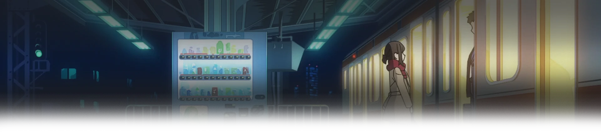

Доки, ты справишься!
Ganbare Douki-chan
Доки-тян является юной трудолюбивой девушкой, которая работает в офисе и отлично справляется со своей работой. Дела отнимают много времени, но героиня также не забывает и о личной жизни, которую она хочет устроить. Объектом обожания девушки является её сэмпай – Доки-кун, молодой мужчина, являющийся коллегой героини. Она постоянно думает о нём и не может выбросить коллегу из головы.
Доки-тян очень боится признаться возлюбленному в своих чувствах, ведь она не уверена в его взаимности. За сердце Доки-куна сражаются ещё две девушки, также работающие в офисе. Когда всех четверых посылают в командировку, выходит путаница с гостиничными номерами. Доки-тян и Доки-кун оказываются в одном номере, что вызывает смущение героини и негодование её соперниц.
Сезон:
Осень, 2021
Возрастной рейтинг:
13+
Эпизоды:
12 / 12
Статус:
Завершен
Жанры:
Комедия, Романтика, Этти